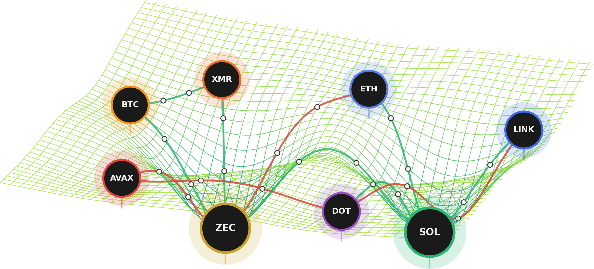
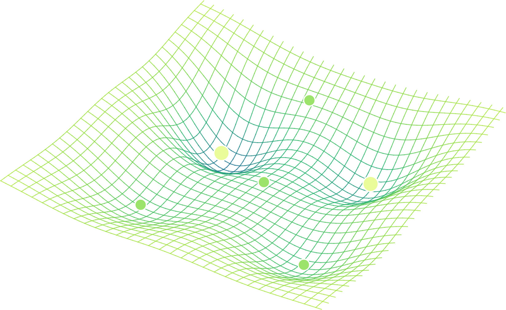
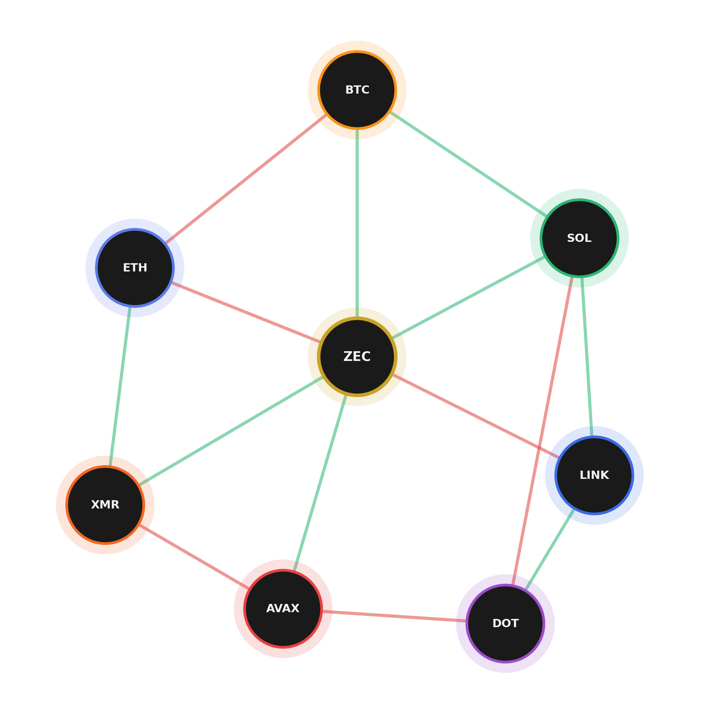
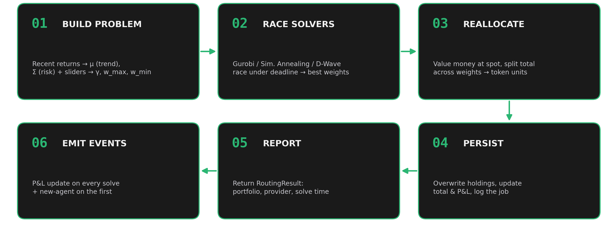
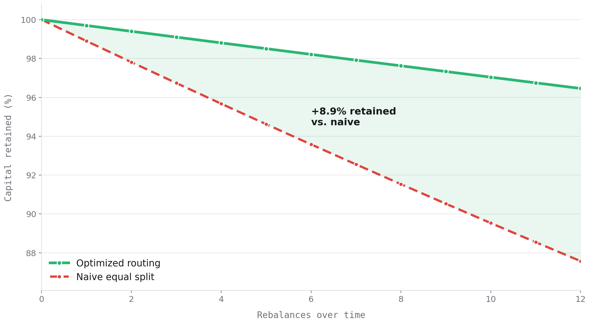

Bitrefill · Quantum Asset Selection
We frame your portfolio as a QUBO — assets as nodes, couplings as edges — then race classical and quantum solvers to choose the best crypto to spend on gift cards, mobile top-ups, and eSIMs.

Asset selection as an optimization landscape
Every basket is a point on a surface shaped by expected return, risk, and market conditions. The optimizer descends toward the deepest wells — the allocations that cost the least to hold and trade.

Formulating the QUBO
Nodes are assets; each carries a weight h (its standalone appeal). Edges are the J couplings between assets — how holding one affects another.
Topology is irregular — a node can couple to many others, not just four.

From problem to persisted portfolio
Build a PortfolioProblem from recent returns (μ = trend, Σ = risk) and the
slider knobs (γ, w_max, w_min); race the solvers for the best feasible weights; value money
at spot, split it into token units, save, and report.

Why pool optimization pays off
Optimizing across the pool routes weight toward the assets that are cheapest to trade under current conditions — so each rebalance loses less to slippage.
That edge compounds: you still buy the least-weighted assets, but you keep more of every dollar over the long run.

Assets as wells, constraints as nodes
Each asset bends the cost surface into a well; couplings (green = reinforcing, red = opposing) and the constraint nodes between them shape it.
The search settles into ZEC and SOL — the two deepest wells.